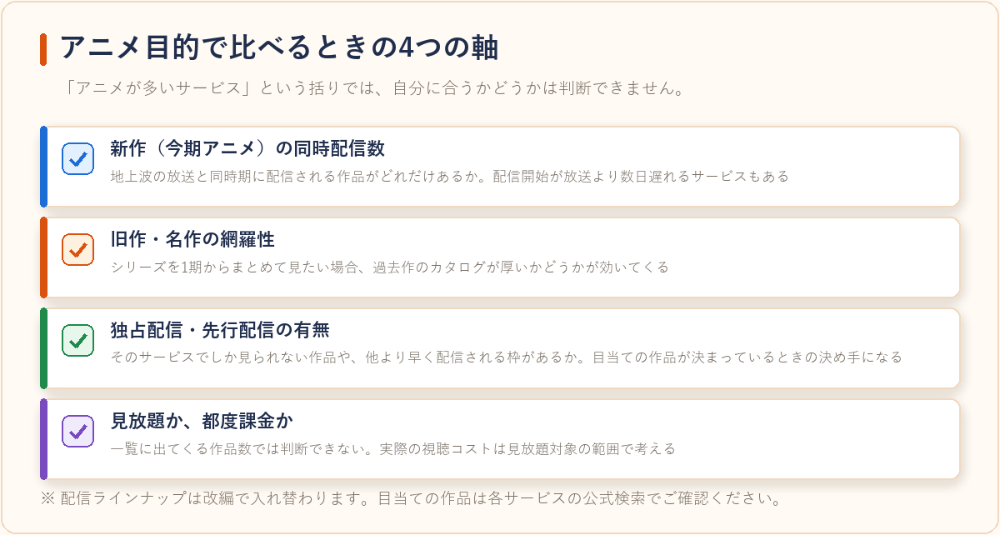
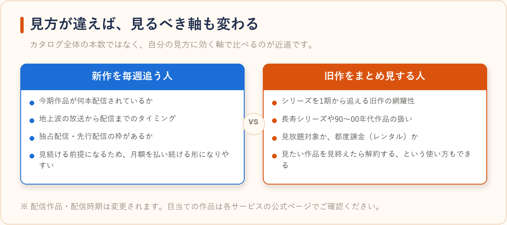
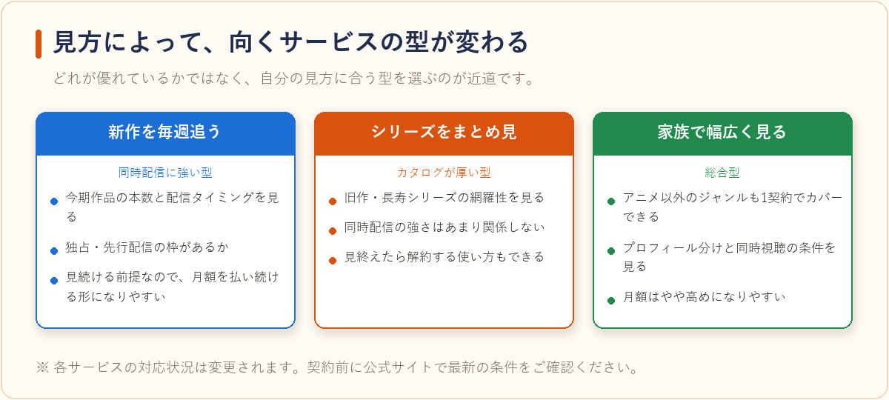

アニメ好きにおすすめのVODサービスはどれ？作品ラインナップの傾向比較
2026-08-06 更新
動画配信サービス（VOD）はどこもアニメを扱っていますが、「アニメを見るため」に選ぶとなると、比較すべきポイントは総合的な作品数だけではありません。放送中の新作を毎週追いたいのか、過去の名作をまとめて見たいのか、あるいは家族と別々の作品を同時に見たいのかによって、適したサービスは変わります。この記事では、アニメ視聴を主目的にVODを選ぶときの比較軸と、主要サービスのラインナップの傾向を客観的に整理します。
アニメ目的でVODを選ぶときの4つの比較軸
新作（今期アニメ）の同時配信数
地上波の放送と同時期に配信される作品がどれだけあるか。放送を追いかけたい人にとって最も重要な軸です。配信開始が放送より数日遅れるサービスもあります。
旧作・名作の網羅性
シリーズものを1期からまとめて見たい場合、過去作のカタログが厚いかどうかが効いてきます。長寿シリーズや90〜00年代作品の扱いはサービス差が出やすい部分です。
独占配信・先行配信の有無
特定サービスでしか見られない作品や、他より早く配信される枠があるかどうか。目当ての作品が決まっている場合は、ここが決め手になります。
見放題か、都度課金（レンタル）か
同じ作品でも「見放題対象」と「ポイント／個別課金」に分かれます。一覧に出てくる作品数だけでは判断できないため、実際の視聴コストは見放題対象の範囲で考える必要があります。

主要サービスのアニメ関連の傾向
下表は、各サービスが公表している特徴やサービス設計から読み取れる一般的な傾向をまとめたものです。配信ラインナップは権利契約により随時入れ替わるため、目当ての作品がある場合は必ず公式サイトの検索で確認してください。
| サービス | アニメ面の傾向 | あわせて確認したい点 |
|---|---|---|
| ABEMAプレミアム | 新作アニメの同時・先行配信枠が多く、放送中の作品を追う用途に向く傾向。見逃し視聴や追っかけ再生などテレビ的な視聴導線がある | 無料版との機能差、見放題対象の範囲 |
| アニメ専門系サービス | アニメに特化してカタログを組んでいるため、旧作を含めた本数の網羅性が高い傾向 | アニメ以外のジャンルは基本的に対象外 |
| 総合型の大手VOD | アニメに加えて映画・ドラマ・雑誌なども扱う。作品数は多いが見放題対象と個別課金が混在しやすい | 月額料金がやや高めになりやすい |
| WOWOWオンデマンド | 映画・スポーツ・音楽ライブなど独自編成が中心。アニメ枠もあるが本数重視のサービスとは方向性が異なる | アニメ単体目的かどうかで評価が変わる |
つまり「アニメの本数が多い＝自分にとって最適」とは限りません。放送中の新作を追う人はABEMAプレミアムのような同時配信に強いサービス、シリーズをまとめて見たい人は旧作カタログの厚いサービス、家族で1契約を共有したい人は同時視聴数の多いサービス、と目的別に分かれます。
新作を追う人と、旧作をまとめ見する人で最適解は変わる
放送中のアニメを毎週追いかけたい場合、重要なのはカタログ全体の本数ではなく「今期作品が何本配信されているか」と「配信タイミング」です。一方、完結したシリーズを一気に見たい場合は、同時配信の強さはほとんど関係なく、旧作を含めた見放題の範囲が効いてきます。前者は月額を払い続ける前提になりやすく、後者は見たい作品を見終えたら解約するという使い方もできるため、契約期間の考え方も変わります。

ABEMAプレミアムの料金や機能の詳細は、ABEMAプレミアムはどんな人におすすめ？料金・見放題作品の傾向まとめで整理しています。
選び方のポイント
- まず「見たい作品名」で検索してから契約する：ほとんどのサービスは会員登録前でも作品検索ができます。目当ての作品が見放題対象か、個別課金かをここで確認しておくと失敗が減ります。
- 今期アニメの本数を実際に数える：「アニメ充実」という表現だけでは判断できません。公式サイトの新作特集ページで、今期何本が配信対象になっているかを見るのが確実です。
- 同時視聴数とアカウント共有ルールを確認する：家族で使う場合、同時に再生できる台数の上限や、プロフィール分けの可否がサービスごとに異なります。
- ダウンロード（オフライン視聴）対応を確認する：通勤・通学中に見る場合は必須級の機能ですが、対応作品が一部に限られることもあります。
- 無料体験の期間と条件を確認する：無料体験がある場合は、その期間中にラインナップを実際に確認するのが最も確実です。各サービスの無料体験の条件は動画配信サービスの無料体験まとめ比較にまとめています。

見落としやすい注意点
アニメは権利契約の都合で配信終了が比較的起きやすいジャンルです。「あとで見よう」と思っていた作品が配信リストから消えることもあるため、シリーズをまとめ見する予定があるなら早めに視聴計画を立てておくと安心です。また、無料体験を利用する場合は、体験期間の終了日を登録直後に確認しておきましょう。解約忘れを防ぐ具体的な方法はVODサービスの解約忘れを防ぐコツと注意点まとめで解説しています。
よくある質問
アニメだけ見るなら専門サービスと総合サービスのどちらが得ですか？
視聴するのがアニメだけであれば、月額料金が抑えられていることの多いアニメ特化型が候補になります。一方、映画やドラマも見る、家族が別ジャンルを見るという場合は、総合型のほうが1契約で足りることがあります。世帯全体で契約本数を減らせるかどうかで判断するのが分かりやすい基準です。
複数のVODを併用する必要はありますか？
独占配信の作品を追いたい場合は、どうしても1サービスでは完結しないことがあります。ただし常時2つ契約するのではなく、見たい作品が配信されている期間だけ契約する使い方をしている人もいます。
スマホとテレビの両方で見られますか？
主要なサービスはスマートフォン・PC・テレビ（スマートテレビやストリーミング端末）に対応していることが多いですが、対応機種や画質の上限はサービス・プランによって異なります。テレビでの視聴が前提の場合は、対応デバイス一覧を事前に確認しておくと確実です。